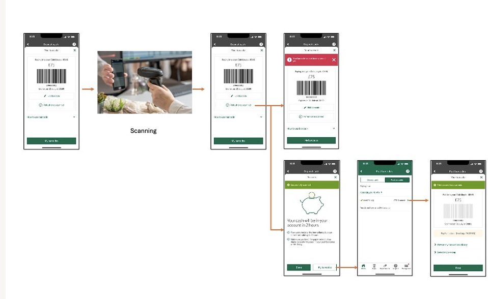
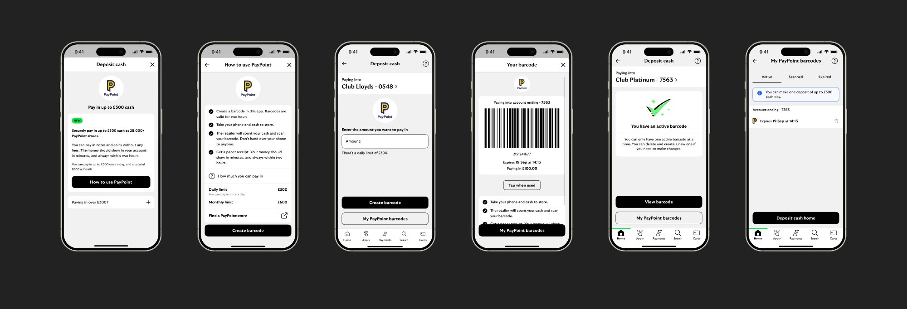

Keeping cash banking accessible as branches close.
August 2025
FS Tech Awards · Mar 2026
Winner — Best Use of IT in Consumer Finance
Launched
August 2025
Role
Service Designer, UX Designer
Collaboration
Product, UX, Content, Research, Engineering, Business, 3rd party (PayPoint)
Official Lloyds Bank walkthrough of the launched Deposit Cash at PayPoint service (starts at 0:29). Watch on YouTube ↗
Scroll
Context & challenge
As Lloyds Banking Group evolved its branch strategy, customers who rely on cash and face mobility or accessibility barriers still needed equal access to everyday banking. With 99.5% of people living within a mile of a PayPoint location, the opportunity was to let customers deposit cash at local shops without needing a branch, while keeping the trust and dependability they expect from their bank.
"This journey would save me doing this... I could go down to a corner shop and pay it straight away. I think it's wonderful."
Customers generate a barcode, take it to any PayPoint store and deposit up to £300 a day. Tickets are valid for two hours.
My role
I led service design and UX design across the Deposit Cash journey from mid-2024 concepting through to the August 2025 launch.
Key responsibilities
✓Mapped and wireframed three core V1 user flows
✓Developed screens, copy and research materials with Product, UX, Content and Research
✓Submitted the journey to the Inclusive Design Panel and acted on lived-experience feedback
✓Aligned scope and constraints across Product, Engineering, Business and PayPoint
✓Shaped MVP and MVP+ decisions from research and panel findings
For MVP, each eligible Current or Savings account supports one active barcode at a time. We deliberately cut barcode editing (deleting and generating a new barcode proved just as fast) and shipped a manual post-scan check ("Tap when used") as an explicit MVP compromise before automated scan confirmation in MVP+.
Impact & outcome
PayPoint Cash Deposit launched in August 2025 across Lloyds Bank, Halifax, and Bank of Scotland—jointly delivered by the Payment Lab and Payment Services on an end-to-end cloud-native GCP stack, making Lloyds the first major UK bank to offer in-app barcode cash deposits.
Aug 2025 – Mar 2026
223,000
Deposits completed with consistent month-on-month growth
Volume
£30.05M
Total cash deposited across 3 brands
Ticket Size
£137
Average deposit (up to £300 daily limit)
Reach
30,000+
PayPoint stores · 94% open 7 days · 99.5% within 1 mile
During concepting in mid-2024, I wireframed three core flows and ran unmoderated user testing across each one: creating a barcode for the first time, editing an existing barcode for mistyped amounts, and scanning the barcode in a shop. On unmoderated testing, all three flows appeared usable.
Early UX exploration board — testing entry points, barcode creation and in-store deposit flows.
JTBD 01
Create a barcode for the first time
Entry points, PayPoint eligibility, user education, deposit limits, and first-time barcode generation.
JTBD 02 · Cut for MVP
Edit my barcode (V1)
Let customers fix a mistyped amount on an active barcode—later removed after the Inclusive Design Panel.
JTBD 03
Scan my barcode in a shop
In-shop handover with the retailer, barcode scanning, and post-deposit confirmation in the app.

The Inclusive Design Panel changed what 'tested' meant
In September 2024, I took the journey to the Inclusive Design Panel—an internal programme subsidised by an external inclusive design audit institution, bringing together lived-experience experts and subject specialists. While unmoderated testing confirmed users could click through the prototypes, the panel pushed our thinking beyond usability and accessibility into foreseeable harm: coercion, financial abuse, exploitation, and money-muling.
I removed my own edit flow
I cut the V1 edit flow for MVP and restricted accounts to one active barcode per Current or Savings account. Deleting a mistyped barcode and creating a new one was simpler to build and just as easy for customers—while closing off ways to manipulate or reuse active tickets:
Before · V1
Customers could edit an existing barcode and hold multiple active barcodes.
After · Launched
Only one active barcode is allowed at a time, tickets are valid for two hours, and a mistyped amount is fixed by deleting the barcode from the Deposit Cash home and creating a new one.
Trust vs convenience: why screenshots were blocked
The central design tension was trust versus convenience. Customers liked the convenience of generating a barcode, but they wanted reassurance about handing cash to a corner-shop counter, clear proof of deposit, and unambiguous ticket status. At the same time, screenshot prevention was intentional—blocking screenshots stopped barcodes from being shared or transferred to third parties under coercion or money-muling. That left a real-world trade-off for customers with poor mobile signal in store, which made clear pre-shop guidance and explicit ticket states essential.
Users needed to see where their ticket stood
To make single-barcode management clear, I introduced a Deposit Cash home showing three explicit ticket states: active, scanned and expired.

Delivered Deposit Cash screens — showing barcode creation, the "Tap when used" prompt, the single active barcode state, and the Deposit Cash home with Active, Scanned and Expired tabs.
We could not see the scan, so we designed around the constraint
Research strongly preferred automatic confirmation once cash was handed over. In MVP, however, PayPoint could only confirm a scan when our app triggered a check. Rather than pretending that technical constraint did not exist, I added an explicit MVP compromise: a "Tap when used" button. If the ticket has not been scanned yet, the app tells the customer so—giving them clear status feedback while keeping the manual step transparent until automated confirmation arrives in MVP+.
Helping customers find a store
I introduced "Find nearby cash point" to minimise friction and clear up confusion around the "cash point" concept, and it shipped as a link to an external page.
Key considerations
The service required balancing customer accessibility with partner and risk constraints:
Third-party alignment
Maintaining a trusted banking experience inside third-party PayPoint retail stores so customers feel confident handing over cash at a local counter.
Single-barcode logic
One active barcode per Current or Savings account, valid for two hours. If a customer mistypes an amount, they delete the active barcode from the Deposit Cash home and create a new one.
Risk & harm mitigation
Addressed coercion, financial abuse, exploitation, and money-muling by blocking screenshots, cutting barcode editing, and capping active tickets. Risk and product teams set a £300 daily limit, and I designed within it.
Reflection
Unmoderated testing showed me my V1 flows were usable, yet the Inclusive Design Panel proved they were not yet safe or dependable in real-world conditions. Overruling my own first design—removing barcode editing and making ticket states explicit—was the turning point that made the service trustworthy at launch.